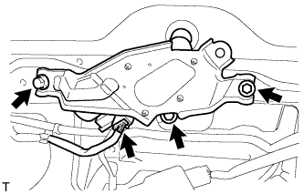
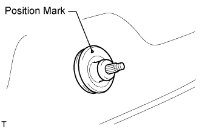
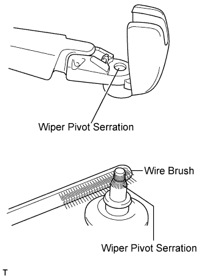
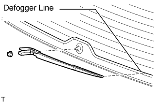
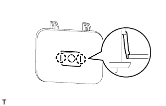
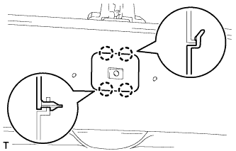
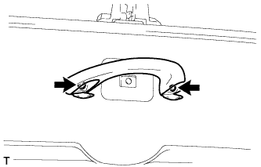

REAR WIPER MOTOR > INSTALLATION |
| 1. INSTALL REAR WIPER MOTOR ASSEMBLY |
 |
Temporarily install the rear wiper motor assembly with the 3 bolts.
Tighten the 3 bolts.
Connect the connector.
| 2. INSTALL REAR WIPER MOTOR GROMMET |
 |
Install the rear wiper motor grommet with the position mark facing upward as shown in the illustration.
| 3. INSTALL REAR WIPER ARM |
Operate the rear wiper, and stop the rear wiper motor at the automatic stop position.
 |
Clean the wiper pivot serration with a wire brush.
 |
Set the head of the blade on the defogger line.
Install the nut and rear wiper arm.
Close the cover.
| 4. INSTALL BACK DOOR GARNISH |
 |
Attach the 14 clips to install the back door garnish.
| 5. INSTALL POWER BACK DOOR MAIN SWITCH (for Parallel Seat Type) |
 |
Attach the 2 claws to install the power back door main switch.
| 6. INSTALL NO. 2 BACK DOOR SERVICE HOLE COVER (for Parallel Seat Type) |
 |
Connect the connector.
Attach the 4 claws to install service hole cover.
| 7. INSTALL ASSIST GRIP (for Parallel Seat Type) |
 |
Install the assist grip with the 2 screws.
| 8. INSTALL BACK DOOR SIDE GARNISH LH |
 |
Attach the 3 clips to install the back door side garnish.
| 9. INSTALL BACK DOOR SIDE GARNISH RH |
| 10. INSTALL CENTER BACK DOOR GARNISH |
 |
Attach the 5 clips and 2 claws to install the back door garnish.